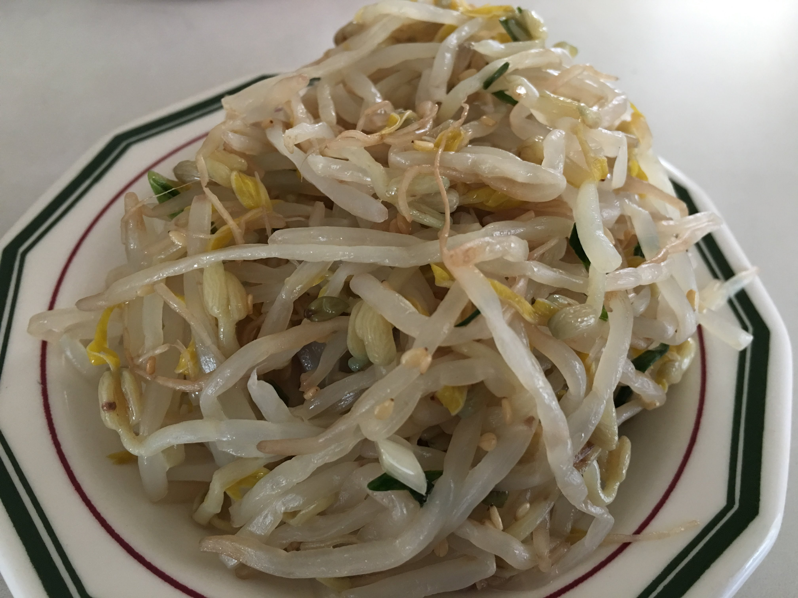
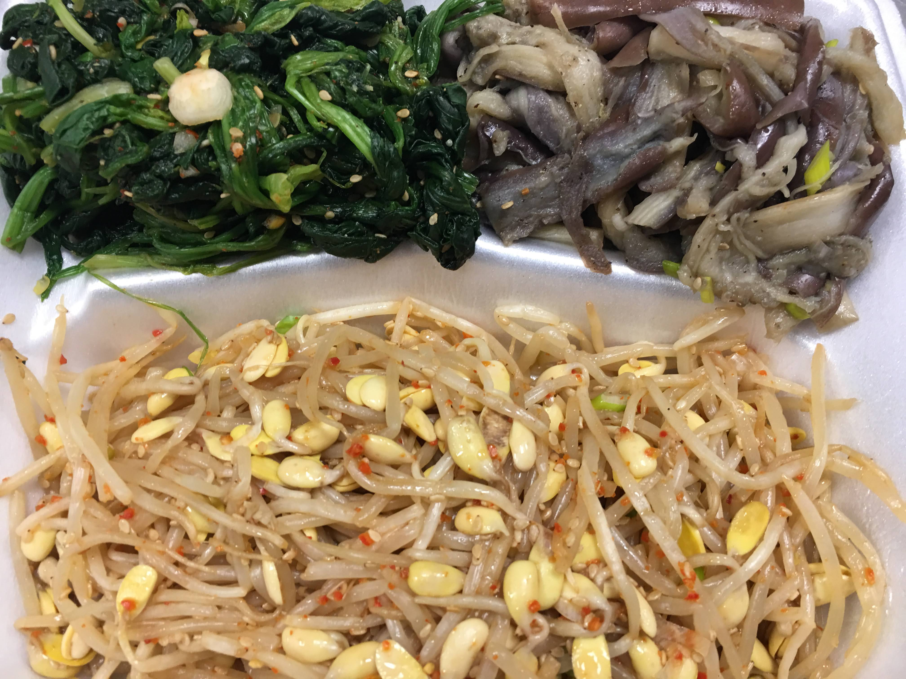
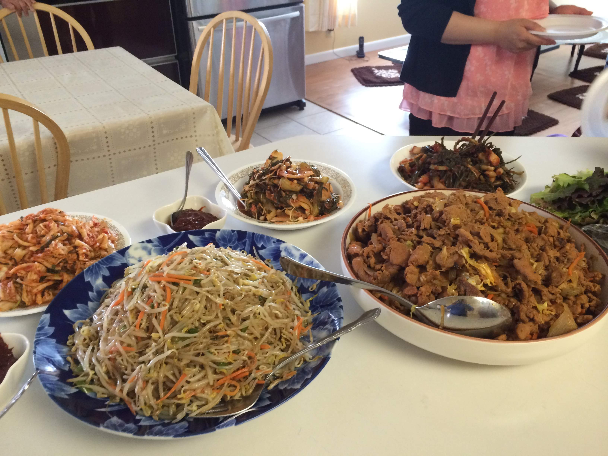

I have eaten my share of bean sprouts; as a soup, a side dish, in the rice.
It was ubiquitous item growing up.
We rarely ate meat.
Only during holidays – a couple hundred grams of pork for the entire family.
Typically, pork would be served in the soup, to spread its flavor, to maximize its value.
How we would look for signs of meat in the soup.
Other source of protein was fish, but even those were not available regularly.
Our primary source of protein were bean varieties.
Now looking back, it was prepared with local seasoning common to PyongYang area.



At times, mom would add other vegetables and it became a 비빔밥.
The source of protein in those case was fried egg, with slightly uncooked yolk.
Later in life, there was one bean item mom could no longer eat.
She ate it so much growing up, she could not even look at it, let alone eat it.